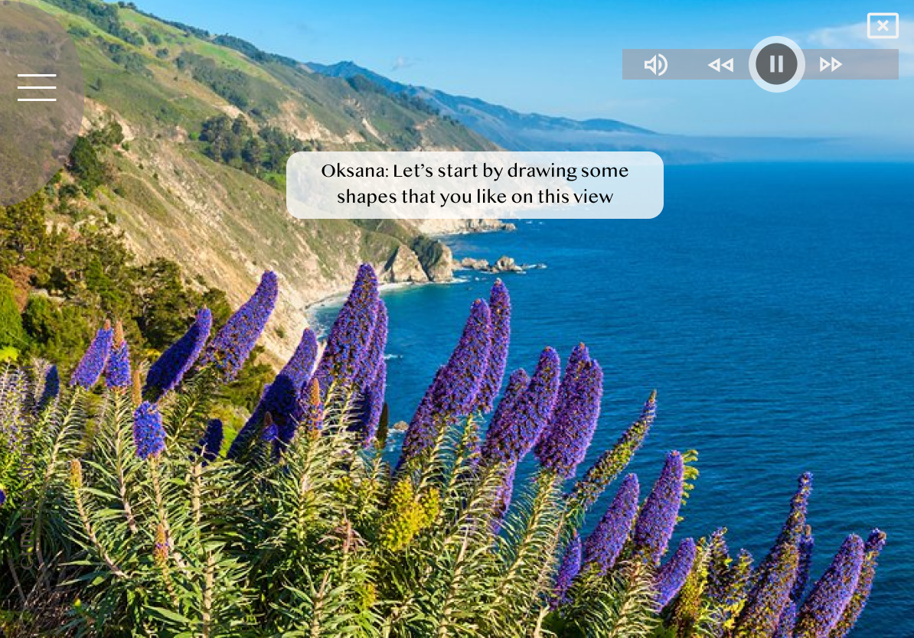

“I would love to experience how to create artwork like an artist!”
How to make the museum visiting experience more engaging and unique is always challenging. As a museum fan, I got very excited when I asked for this challenge. When we talk about museums, we usually mention those well-known artists. In this project I want to give exposure to a young emerging artist whose work is special in its art practice. I feature on Oksana Berda because her work has calm and relaxing quality that can resonate to the philosophy of living under the moment.

Design concept

Began by brainstorming the concept map, I found the main concepts are spontaneity, freeing the intuition and under the moment.
Using the video of nature as an inspiration board, users can freely express themselves when looking at the beauty and listening to the sound of nature.
Then I thought about my site map that can make user’s experience more seamless. Referencing the sitemap, I sketched my concepts of the UI and added visual elements to make my concept more solid and understandable.
Making user stay at current.
The biggest challenge of this project is to think about how to make the experience flows organically. Because most of the time when people create art using an app or kiosk, it can be hard to stay under the current moment. However focusing one task at a time will effectively helps the art making process. Then I had this idea of using Oksana's voice as a prompt, at the beginning of each stage, as it is a great way to help users staying under the moment. It also helps to relieve the anxiety of making mistakes.
Give user the process overview ahead of time.
Making an artwork for an average user can be an intimidating process as some of them may never made art previously. To make everyone feel comfortable about the experience, I want to give them an overview.